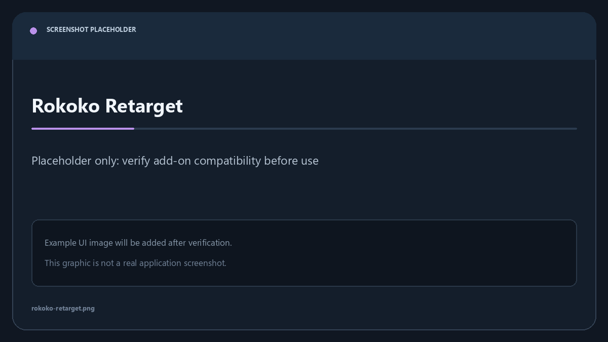

Mixamo retargeting
Map source motion to the target character's armature, then inspect and save the resulting animation.
A motion skeleton is not the same as a Mixamo rig. Retargeting needs a mapping between source joints and target deform bones. The exact process depends on the exported skeleton and chosen tool.
Prepare the Blender scene
- Import or open the motion data using the method supported by your FreeMoCap export.
- Import your Mixamo-rigged character using Blender's importer for the asset's actual file format.
- Save a new copy of the project before changing armatures, transforms, or actions.
- Confirm source motion plays and the target character's armature is present.

Choose a compatible retargeting tool
Use a retargeting workflow whose current documentation explicitly supports your Blender version and both source and target skeletons. The Rokoko Studio Live Blender Add-on is one option to investigate, not an endorsement, requirement, or guarantee that it supports FreeMoCap's exported skeleton. Check current compatibility and format requirements before installing or using it.
A documented manual workflow may also be appropriate for your export. Avoid assuming that a tool can automatically map landmarks to Mixamo bone names.
Map the motion
- Match corresponding source and target joints: hips/root, spine, neck/head, shoulders, arms, and legs where those joints exist.
- Set the source and target rest/reference poses as the chosen workflow requires.
- Check forward/up axes, scale, root translation, and frame rate against the exporter/importer documentation.
- Test a short frame range and inspect limb direction and joint orientation before baking a full take.
Inspect and bake the animation
- Play the full timeline and inspect the character from front, side, and back views.
- Look for foot sliding, floor penetration, twisted limbs, drifting root motion, and missing frames.
- Correct mappings, reference pose, or scale using the tool's documented controls.
- Bake or save the action on the target armature using the chosen tool's workflow, then save another project version.

Next step
If the source motion itself does not play, revisit Blender export and import. For mapping problems, see retargeting troubleshooting.